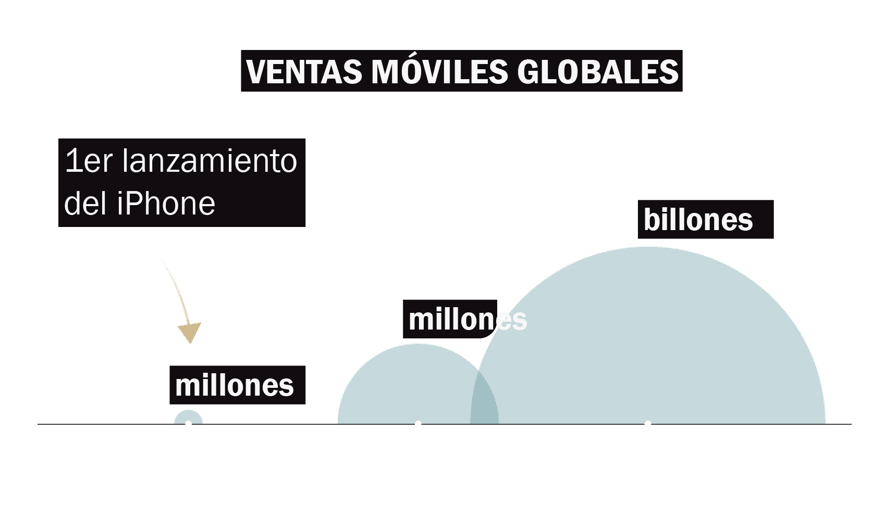
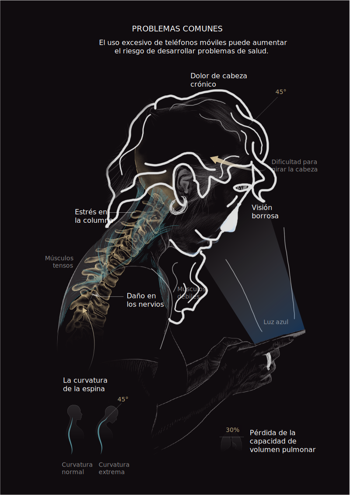

Por qué tu smartphone te está causando el síndrome del "text neck"

Valentina Altamirano
24 de Mayo, 2021
Cada vez que usamos el celular, tendemos a encorvarnos sobre él. Esto es, al menos dos horas al día, lo que puede llegar a aumentar el peso de nuestra cabeza hasta en 27 kg, y por lo tanto, dañar nuestra postura. Además, si envías mensajes de texto mientras caminas, te expones a todo tipo de accidentes.
Para 2019 se esperaba que el número de usuarios de teléfonos móviles en todo el mundo superara los 5 mil millones. Era muy posible que la absorción de los móviles creciera hasta en un 67%, con China en el objetivo de contribuir con 1.500 millones de conexiones móviles, e India con 1.100 millones. El aumento en el crecimiento del mercado móvil se puede atribuir principalmente a la reducción del costo y la disponibilidad de los teléfonos inteligentes, ahora más que nunca.
Los teléfonos móviles ahora se consideran generalmente esenciales para nuestra vida diaria, y los mensajes de texto son la forma más común y rápida de comunicación. Sin embargo, esto se ha transformado en una arme de doble filo, pues las consecuencias que trae el uso prolongado del celular, son bastantes. Como se visualiza más abajo, van desde dolores de cabeza hasta una pérdida en la capacidad de nuestros pulmones...
Recomendaciones
Para tratar de evitar estos daños, los especialistas sugieren que se sostenga el teléfono a la altura de los ojos, que descanse regularmente de los mensajes de texto y limite el tiempo de pantalla para evitar el dolor tanto ocular como cefálico. Hay aplicaciones disponibles para enviar alertas cuando el usuario ha estado en una postura mirando hacia abajo durante demasiado tiempo, ¡investíguelas!